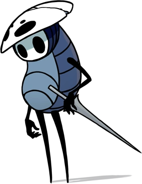

Quirrel
Quirrel es uno de los principales NPCs de Hollow Knight, es un viejo explorador que ha olvidado su pasado y ahora busca conocer los misterios de Hallownest.
Puede ayudar en ciertas peleas importantes como contra Uumuu.

Quirrel es uno de los principales NPCs de Hollow Knight, es un viejo explorador que ha olvidado su pasado y ahora busca conocer los misterios de Hallownest.
Puede ayudar en ciertas peleas importantes como contra Uumuu.
